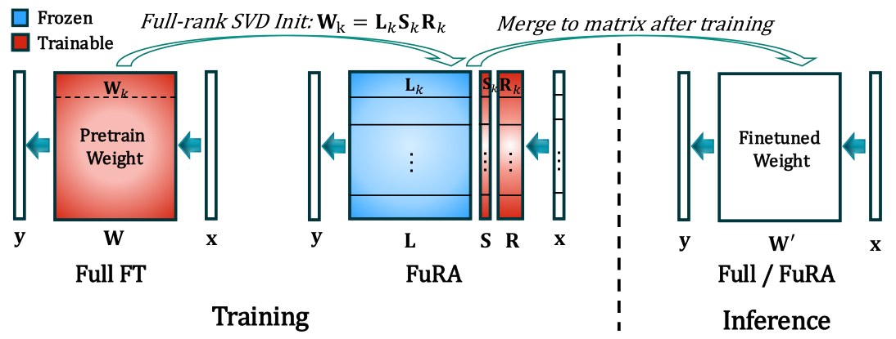

FuRA: full-rank PEFT
TL;DR LoRA-level cost, Full-FT-level performance (+1.37 over Full FT on LLaMA-3-8B). Each layer is factored as W = L·S·R with L fixed to the pretrained SVD basis; training only S and R gives full-rank, spectrally preconditioned updates.
NeurIPS 2026 →